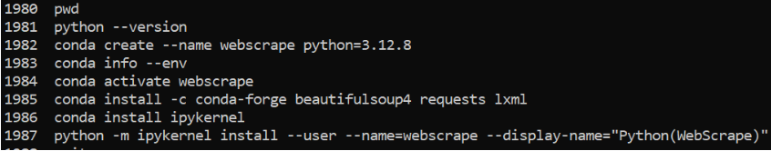

9. WebScraping as External Data Structures#
Web Scraping and Databases: A Hybrid Approach#
While web scraping is often used to extract data for immediate use, it does not store it. A powerful workflow would be:
Scrape data from online sources.
Store it in a structured database (SQL or NoSQL) for long-term analysis.
Query it later instead of repeatedly scraping.
Web Scraping as a Data Acquisition Method#
Web scraping is a method of extracting external data from structured or semi-structured sources on the web and transforming it into a usable format. Unlike databases or file storage, web scraping does not inherently store data—it is a way to retrieve and structure data from the web dynamically. It allows access to data stored in HTML web pages that might not be available via an API.
Web Scraping vs. APIs#
Feature |
Web Scraping |
APIs |
|---|---|---|
Access |
Extracts data from web pages (HTML tables, text, lists) |
Queries structured data from a service (often JSON or XML) |
Structure |
Often semi-structured (needs parsing) |
Well-structured |
Reliability |
Pages may change, breaking the scraper |
More stable (unless API changes) |
Use Case |
Extracting tables, research data, metadata from articles |
Accessing structured datasets (PubChem, NCBI, weather data) |
Thus, web scraping is an alternative to APIs when structured access is unavailable.
Web Scraping as a Bridge from Classical Literature to Structured Data#
Scientific data has historically been communicated through journal articles, textbooks, and reports. Many modern scientific knowledge repositories (e.g., Wikipedia, research databases) still store information in text-based formats rather than structured databases. Web scraping allows you to:
Extract tabular data (like chemical properties from Wikipedia or patents).
Retrieve text-based metadata (such as author names, abstracts, and citations).
Collect non-tabular structured information (like structured web pages with lists of elements).
By applying text parsing, table extraction, and structured storage, web scraping allows researchers to convert human-readable content into machine-readable data.
2. Setting up your env#
conda activate your-webscrape-env
conda install -c conda-forge beautifulsoup4 requests lxml
beautifulsoup4: The core parsing library.requests: To fetch web pages.lxml: A fast and efficient HTML/XML parser (optional but recommended for performance).
the image below shows how I set up a webscrape environment while also connecting the kernel to Jupyter lab runninig in the base env.

Webscrape a wikipedia element box
import os
import json
import requests
from bs4 import BeautifulSoup
from datetime import datetime # <- make sure this is at the top of your script
# Define the directory and file path
wikipedia_dir = os.path.expanduser("~/data/wikipedia/")
os.makedirs(wikipedia_dir, exist_ok=True) # Ensure the directory exists
carbon_wikipedia_path = os.path.join(wikipedia_dir, "carbon_data.json")
def scrape_infobox(element_name):
"""Scrapes the Wikipedia infobox for a given element and returns a dictionary of properties."""
url = f"https://en.wikipedia.org/wiki/{element_name}"
response = requests.get(url)
soup = BeautifulSoup(response.content, 'html.parser')
# Find the Infobox element
infobox = soup.find('table', class_='infobox')
# Dictionary to store element properties
element_data = {}
# Loop through table rows and extract key-value pairs
for row in infobox.find_all('tr'):
header = row.find('th')
value = row.find('td')
if header and value:
key = header.get_text(strip=True) # Get property name
val = value.get_text(" ", strip=True) # Extract value, keeping spaces
element_data[key] = val
# Add provenance metadata
element_data["_source"] = {
"Wikipedia_URL": url,
"Scraped_from": "Wikipedia Infobox Element",
#"Scraped_on": requests.get("https://worldtimeapi.org/api/timezone/Etc/UTC").json()['datetime']
"Scraped_on": datetime.utcnow().isoformat() + "Z"
}
return {element_name: element_data}
# Scrape data for Hydrogen
carbon_data = scrape_infobox("Carbon")
# Save JSON data to file
with open(carbon_wikipedia_path, "w", encoding="utf-8") as f:
json.dump(carbon_data, f, indent=4, ensure_ascii=False)
print(f"Data saved successfully to: {carbon_wikipedia_path}")
Data saved successfully to: /home/rebelford/data/wikipedia/carbon_data.json
Print out the available properties for hydrogen
import os
import json
# Define file path
wikipedia_dir = os.path.expanduser("~/data/wikipedia/")
hydrogen_wikipedia_path = os.path.join(wikipedia_dir, "hydrogen_data.json")
# Load the JSON file
with open(hydrogen_wikipedia_path, "r", encoding="utf-8") as f:
hydrogen_data = json.load(f)
# Extract Hydrogen properties
hydrogen_properties = hydrogen_data.get("Hydrogen", {})
# Print all keys (property names)
print("Properties available for Hydrogen:")
for key in hydrogen_properties.keys():
print("-", key)
print("\n")
# Print value for a specific key ("Named by") with provenance
key_to_lookup = "Named by"
value = hydrogen_properties.get(key_to_lookup, "Property not found")
source_url = hydrogen_properties.get("_source", {}).get("Wikipedia_URL", "Unknown Source")
print(f"{key_to_lookup}: {value}")
print(f"(Source: {source_url})")
Properties available for Hydrogen:
- Appearance
-
- Atomic number(Z)
- Group
- Period
- Block
- Electron configuration
- Electrons per shell
- PhaseatSTP
- Melting point
- Boiling point
- Density(at STP)
- when liquid (atm.p.)
- when liquid (atb.p.)
- Triple point
- Critical point
- Heat of fusion
- Heat of vaporization
- Molar heat capacity
- P(Pa)
- atT(K)
- Oxidation states
- Electronegativity
- Ionization energies
- Covalent radius
- Van der Waals radius
- Natural occurrence
- Crystal structure
- Lattice constants
- Thermal conductivity
- Magnetic ordering
- Molar magnetic susceptibility
- Speed of sound
- CAS Number
- Discoveryand first isolation
- Named by
- Recognized as anelementby
- Main isotopes
- 1H
- 2H
- 3H
- _source
Named by: Property not found
(Source: https://en.wikipedia.org/wiki/Hydrogen)
Scrape the chem infoboxes of the halogens
import os
import json
import requests
from bs4 import BeautifulSoup
from datetime import datetime, timezone
# Define the list of halogens (either names or symbols)
halogens = ["Fluorine", "Chlorine", "Bromine", "Iodine", "Astatine"]
# Define file path for saving the scraped data
wikipedia_dir = os.path.expanduser("~/data/wikipedia/")
os.makedirs(wikipedia_dir, exist_ok=True) # Ensure directory exists
halogens_wikipedia_path = os.path.join(wikipedia_dir, "halogens_data.json")
def scrape_infobox(element_name):
"""Scrapes the Wikipedia infobox for a given element and returns a dictionary of properties."""
url = f"https://en.wikipedia.org/wiki/{element_name}"
response = requests.get(url)
soup = BeautifulSoup(response.content, 'html.parser')
# Find the Infobox element
infobox = soup.find('table', class_='infobox')
# Dictionary to store element properties
element_data = {}
# Loop through table rows and extract key-value pairs
for row in infobox.find_all('tr'):
header = row.find('th')
value = row.find('td')
if header and value:
key = header.get_text(strip=True) # Get property name
val = value.get_text(" ", strip=True) # Extract value, preserving spaces
element_data[key] = val
# Add provenance metadata
element_data["_source"] = {
"Wikipedia_URL": url,
"Scraped_from": "Wikipedia Infobox Element",
"Scraped_on": datetime.now(timezone.utc).isoformat() # UTC time with explicit timezone
}
return {element_name: element_data}
# Create dictionary of dictionaries for all halogens
halogens_data = {}
for element in halogens:
halogens_data.update(scrape_infobox(element))
# Save JSON data to file
with open(halogens_wikipedia_path, "w", encoding="utf-8") as f:
json.dump(halogens_data, f, indent=4, ensure_ascii=False)
print(f"Data saved successfully to: {halogens_wikipedia_path}")
Data saved successfully to: /home/rebelford/data/wikipedia/halogens_data.json
Now go to user-home/data/wikipedia/ and open the json file for halogens and explore